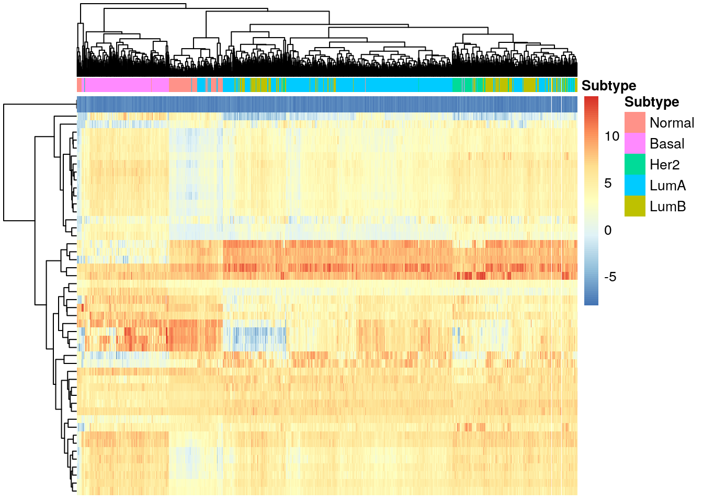
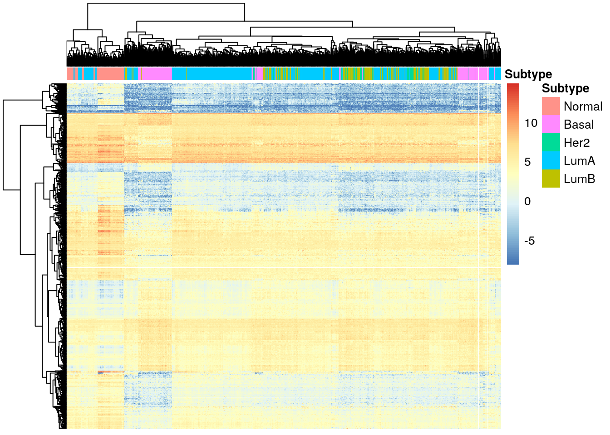
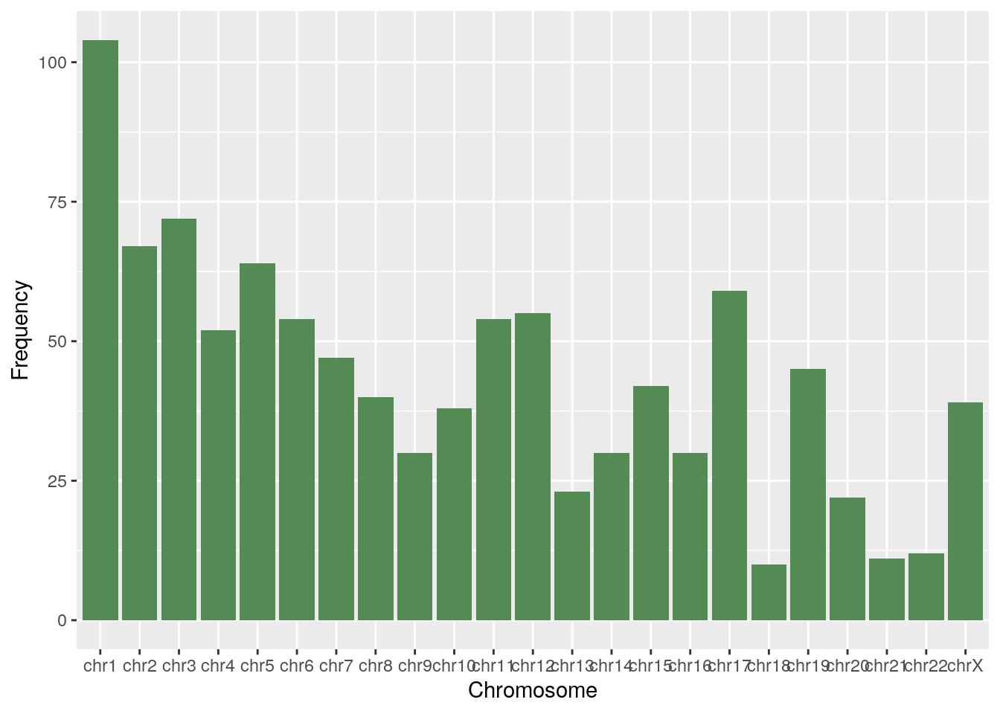
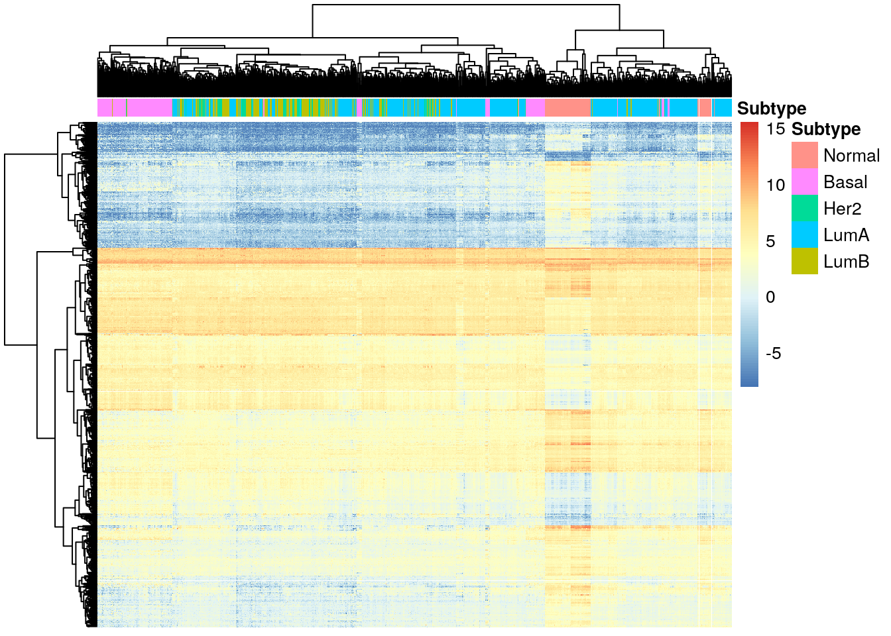
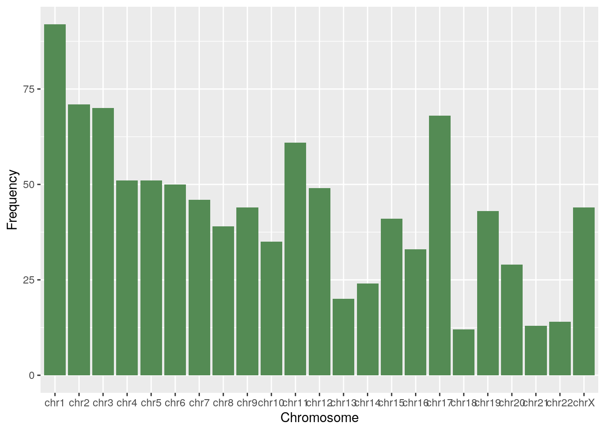
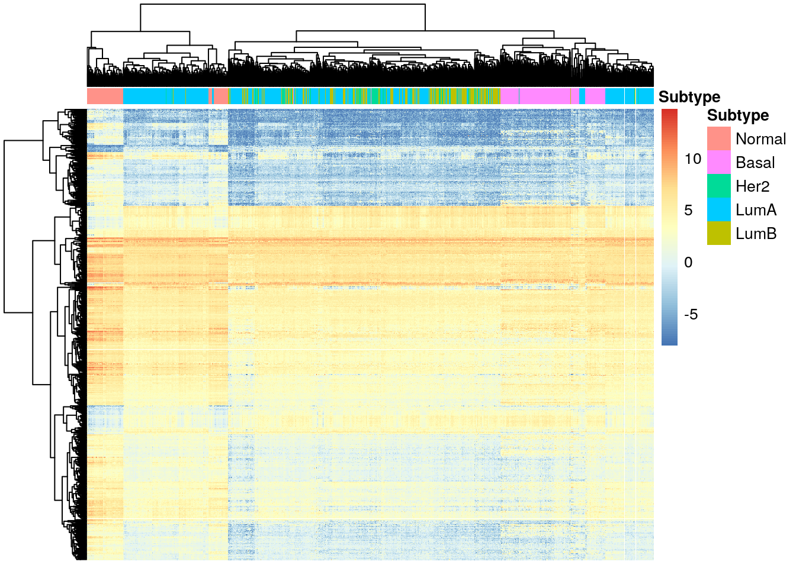
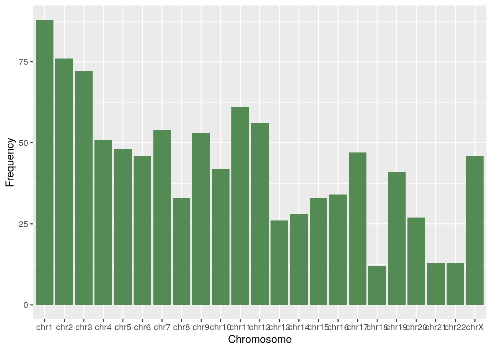
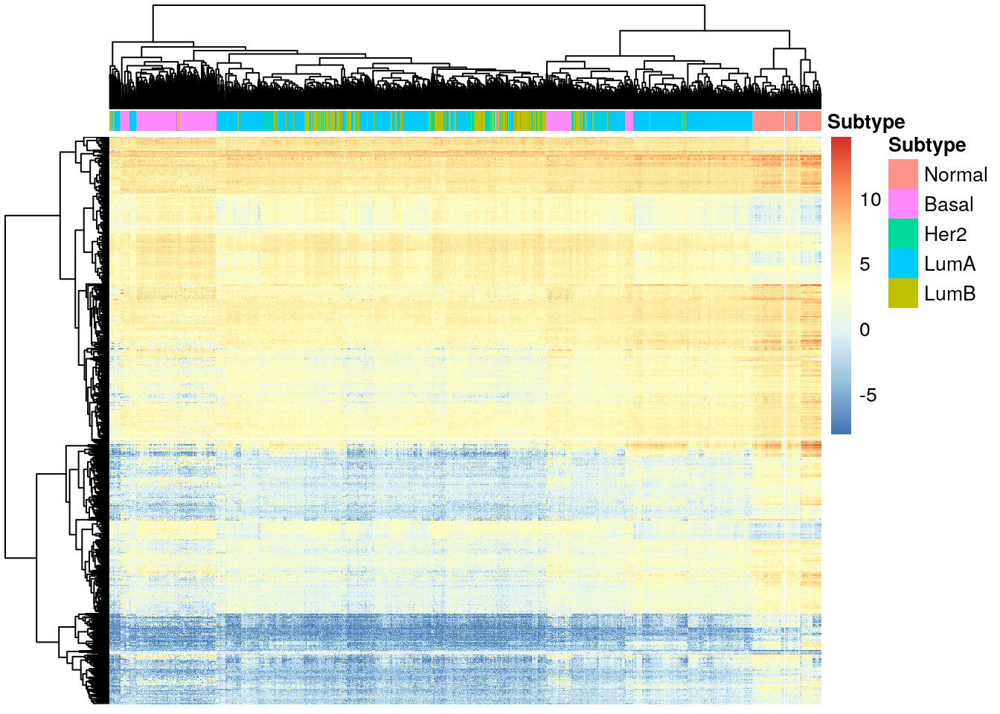
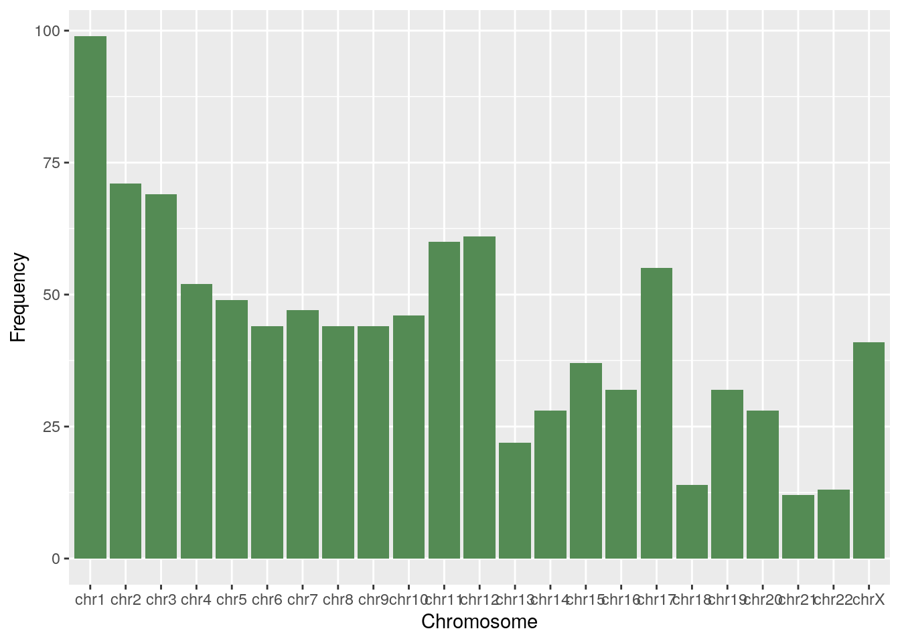

4 Analysis
Let’s now look at the genes we obtained and their functions.
- Basal: “CDCA8” “CAVIN2” “HJURP”
- Her2: “RRM2” “HJURP” “KIF4A”
- LumA: “LYVE1” “VEGFD” “DMD”
- LumB: “PAMR1” “CAVIN2” “DMD”
Looking at what each of the genes does: - CDCA8: Cell Division Cycle Associated 8. It is a component of the chromosomal passenger complex (CPC), a complex that acts as a key regulator of mitosis. - CAVIN2: Caveolae Associated Protein 2, plays an important role in caveolar biogenesis and morphology. - HJURP: Holliday Junction Recognition Protein, participates in DNA damage and mitotic cell cycle pathways. Genecards mentions it is associated with Luminal A subtype. - RRM2: Ribonucleotide Reductase Regulatory Subunit M2, catalyzes the biosynthesis of deoxyribonucleotides from the corresponding ribonucleotides, necessary for DNA synthesis. - KIF4A: Kinesin Family Member 4A, ATP dependent microtubule-based motor protein that is involved in the intracellular transport of membranous organelles. - LYVE1: Lymphatic Vessel Endothelial Hyaluronan Receptor 1, plays a role in autocrine regulation of cell growth. - VEGFD: Vascular Endothelial Growth Factor D, growth factor active in angiogenesis, lymphangiogenesis and endothelial cell growth, stimulating their proliferation and migration and also has effects on the permeability of blood vessels. - DMD: Dystrophin, forms a component of the dystrophin-glycoprotein complex (DGC), which bridges the inner cytoskeleton and the extracellular matrix. - PAMR1: Peptidase Domain Containing Associated With Muscle Regeneration 1, may play a role in regeneration of skeletal muscle.
We can see that most of these genes are related to cell growth and mitotic cell division, two pathways that are commonly misregulated in cancer. One, HJURP, is associated with Luminal A breast cancer, but in our analysis turned out to be more significant for Basal and Her2 subtypes. Interestingly, of the 9 different genes considered here, only one, “RRM2” is among the 50 genes in the PAM50 list defining the subtypes. However, we only considered the three with lowest values for each subtype, expanding this analysis to more genes may result in more genes in the list arising.
We can visualize the difference in expression of these genes through a heatmap, using the pheatmap library.
library("pheatmap")
# Col data
df_col<- as.data.frame(rse_BRCA$subtype)
colnames(df_col) <- "Subtype"
rownames(df_col) <- colnames(rse_BRCA)
# PAM50 genes
PAM50 <- c("UBE2T","BIRC5","NUF2","CDC6","CCNB1","TYMS","MYBL2","CEP55","MELK","NDC80","RRM2","UBE2C","CENPF","PTTG1","EXO1","ORC6","ANLN","CCNE1","CDC20","MKI67","KIF2C","ACTR3B" ,"MYC","EGFR","KRT5","PHGDH","CDH3","MIA","KRT17","FOXC1","SFRP1","KRT14","ESR1","SLC39A6","BAG1","MAPT","PGR","CXXC5","MLPH","BCL2","MDM2","NAT1","FOXA1","BLVRA","MMP11","GPR160","FGFR4","GRB7","TMEM45B","ERBB2")
# Matching genes to ids
PAM50_ids <- match(PAM50, rowData(rse_BRCA)$gene_name)
# Filtering table
PAM50_exp <- vGene$E[PAM50_ids, ]
pheatmap(
PAM50_exp,
cluster_cols = TRUE,
cluster_rows = TRUE,
show_rownames = FALSE,
show_colnames = FALSE,
annotation_col = df_col
)
We can see that the subtypes do not all cluster together, even with the genes that differentiate between them. The Basal subtype seems to be the most different from the rest, and it is also the most aggressive of all subtypes, with the worst clinical outcome.
4.1 Differential Expression by Chromosome
Lastly, we will look at which chromosomes contain the most differentially expressed genes by subtype, focusing on the 1K protein-coding genes with smallest adjusted p-values.
# Function to extract expression of protein coding genes with lowest p vals
diff_exp_genes <- function(de_results, n=1000) {
# Filtering protein coding
protein_coding <- de_results[de_results$gene_type == 'protein_coding', ]
# Selecting top n
smallest_p_vals <- protein_coding$gene_id[rank(protein_coding$adj.P.Val) <= n]
# Getting these genes for heatmap
exprs_heatmap <- vGene$E[match(smallest_p_vals, rownames(vGene)), ]
return(exprs_heatmap)
}To visualize how many differentially expressed genes there are in each chromosome, we can use the chromosome data from seqnames in rowRanges(rse_BRCA).
chr_df <- function(exprs) {
# Get genes from row names
genes <- rownames(exprs)
# Access chr name from rowRanges
chrs <- seqnames(rowRanges(rse_BRCA)[genes])
# Drop unused levels, count occurrences
df <- table(droplevels(chrs))
df <- as.data.frame(df)
colnames(df) <- c("Chromosome", "Frequency")
return(df)
}4.2 Basal tumors
diff_basal <- diff_exp_genes(de_results_basal)
pheatmap(
diff_basal,
cluster_cols = TRUE,
cluster_rows = TRUE,
show_rownames = FALSE,
show_colnames = FALSE,
annotation_col = df_col
)
df <- chr_df(diff_basal)
ggplot(df, aes(x=Chromosome, y=Frequency)) + geom_bar(stat="identity", fill="palegreen4")
4.3 Her2 tumors
diff_her2 <- diff_exp_genes(de_results_her2)
pheatmap(
diff_her2,
cluster_cols = TRUE,
cluster_rows = TRUE,
show_rownames = FALSE,
show_colnames = FALSE,
annotation_col = df_col
)
df <- chr_df(diff_her2)
ggplot(df, aes(x=Chromosome, y=Frequency)) + geom_bar(stat="identity", fill="palegreen4")
4.4 LumA tumors
diff_luma <- diff_exp_genes(de_results_luma)
pheatmap(
diff_luma,
cluster_cols = TRUE,
cluster_rows = TRUE,
show_rownames = FALSE,
show_colnames = FALSE,
annotation_col = df_col
)
df <- chr_df(diff_luma)
ggplot(df, aes(x=Chromosome, y=Frequency)) + geom_bar(stat="identity", fill="palegreen4")
4.5 LumB tumors
diff_lumb <- diff_exp_genes(de_results_lumb)
pheatmap(
diff_lumb,
cluster_cols = TRUE,
cluster_rows = TRUE,
show_rownames = FALSE,
show_colnames = FALSE,
annotation_col = df_col
)
df <- chr_df(diff_lumb)
ggplot(df, aes(x=Chromosome, y=Frequency)) + geom_bar(stat="identity", fill="palegreen4")